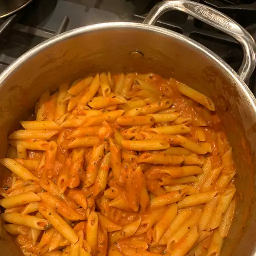

Homepage
Vodka Sauce

Description
Vodka sauce is a delicious and easy to make sauce that goes great with pastas and other Italian dishes.
Ingredients
- Olive Oil
- Garlic
- Onion
- Vodka
- Canned Tomatoes
- Basil
- Salt
- Thyme
- Heavy Cream
Steps
- Heat up a pot, add olive oil, and saute one diced onion and as many cloves of garlic as your heart desires.
- When the onions are translucent, add the canned tomatoes and some vodka.
- Simmer for 15 minutes
- Once thickened, add basil, thyme, and heavy cream.
- Taste for salt
- Add to a pasta and enjoy!